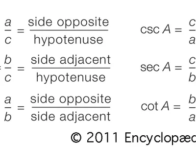
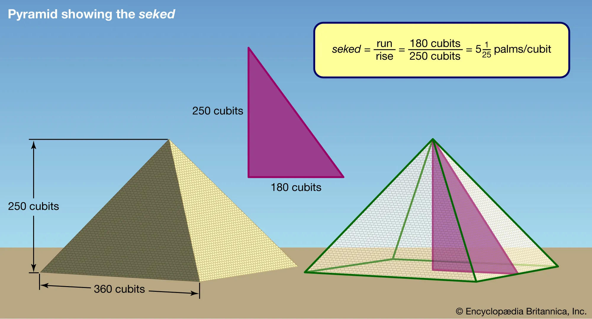
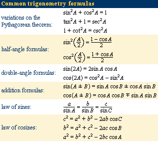

Trigonometry

Trigonometry , the branch of mathematics concerned with specific functions of angles and their application to calculations.There are six functions of an angle commonly used in trigonometry. Their names and abbreviations are sine (sin), cosine (cos), tangent (tan), cotangent (cot), secant (sec), and cosecant (csc). These six trigonometric functions in relation to a right triangle are displayed in the figure. For example, the triangle contains an angle A, and the ratio of the side opposite to
A and the side opposite to the right angle (the hypotenuse) is called the sine of A, or sin A; the other trigonometry functions are defined similarly. These functions are properties of the angle A independent of the size of the triangle, and calculated values were tabulated for many angles before computers made trigonometry tables obsolete. Trigonometric functions are used in obtaining unknown angles and distances from known or measured angles in geometric figures.Trigonometry developed from a need to compute angles and distances in such fields as
astronomy, mapmaking, surveying, and artillery range finding.
Problems involving angles and distances in one plane are covered in plane trigonometry.
Applications to similar problems in more than one plane of three-dimensional space are considered in spherical trigonometry.
History Of Trigonometry

Classical Trigonometry
The word trigonometry comes from the Greek words trigonon (“triangle”) and metron (“to measure”).
Until about the 16th century, trigonometry was chiefly concerned with computing the numerical values of the missing parts of a triangle
(or any shape that can be dissected into triangles) when the values of other parts were given. For example,
if the lengths of two sides of a triangle and the measure of the enclosed angle are known, the third side and the two remaining angles can be calculated.
Such calculations distinguish trigonometry from geometry, which mainly investigates qualitative relations. Of course, this distinction is not always absolute:
the Pythagorean theorem, for example, is a statement about the lengths of the three sides in a right triangle and is thus quantitative in nature.
Still, in its original form, trigonometry was by and large an offspring of geometry; it was not until the 16th century that the two became separate branches of mathematics.
Trigonometry Formulas (Basic):
